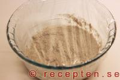
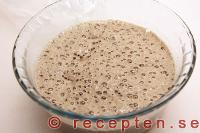

Подготовьте стеклянную банку и насыпьте в неё муку. Добавьте воду температуры 37°C. Перемешайте ложкой. Закваска должна получиться консистенции жидкой каши. Закройте банку и поставьте на ночь в тёплое место (22 – 28°C).
Закваска должна выглядеть также как и вчера вечером. Добавьте муку, затем воду температуры 37°C. Перемешайте до однородности, закройте крышку и поставьте в теплое место.
Теперь закваска уже должна отдавать кислым запахом, а на поверхности должны появляться маленькие пузырьки. Снова добавьте муку и воду, перемешайте ложкой, закройте банку и поставьте на ночь в тёплое место (22 – 28°C).
К этому моменту закваска могла подняться, и на поверхности могли образоваться большие пузыри. Если закваска не поднялась, это ещё не означает, что вы сделали что-то неправильно. Далее закваска должна хранится в холодильнике и доставаться только для подкормки на несколько часов. С этого момента можно начинать использовать закваску для выпечки. Следует помнить, что на этом этапе ваша закваска ещё очень молодая, и она еще не до конца созрела, чтобы вы полноценно могли её использовать для выпечки хлеба. Поэтому в первые разы при выпечке вам потребуется брать чуть больше закваски и, возможно, даже добавлять дрожжи. В любом случае, даже если в первые разы вы будете добавлять немного дрожжей, у хлеба будет приятный кисловатый привкус. Закваска приобретает полную силу через 2-3 недели.
Закваску необходимо подкармливать минимум один раз в неделю. Для этого следует достать банку с закваской из холодильника, добавить 1/2 стакана ржаной муки и 1/2 стакана воды, закрыть банку и поставить закваску в теплое место на 2-9 часов. После этого закваску следует продолжать хранить в холодильнике. Если вы используете закваску для выпечки не так часто, при подкормке необходимо убирать примерно половину закваски каждую или каждую вторую неделю.